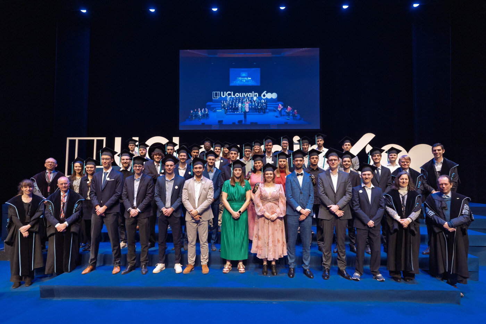
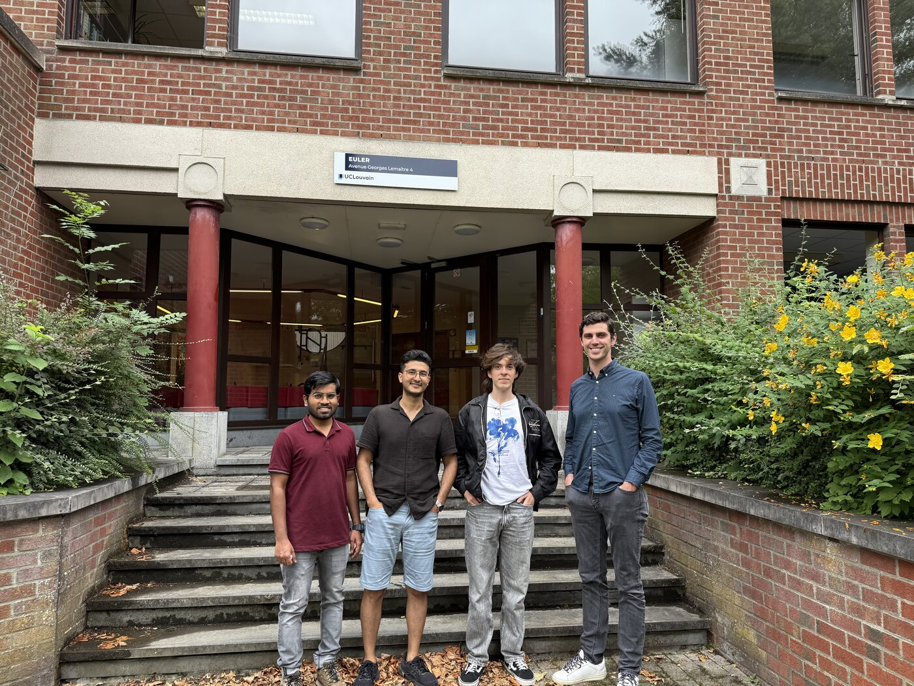
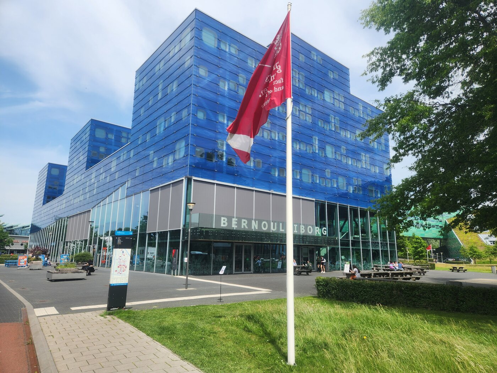
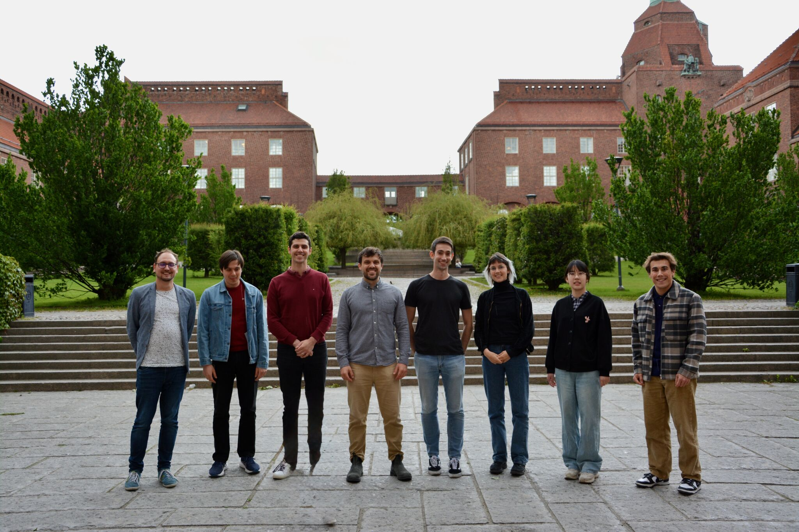
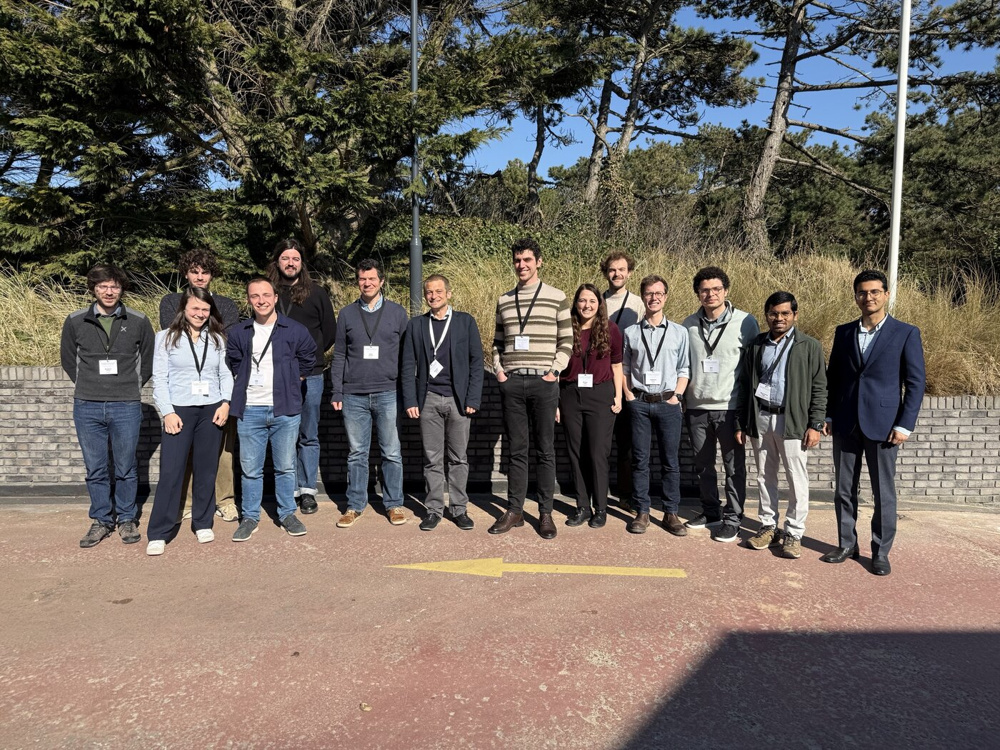

Blog
March 2026: Benelux Meeting on Systems and Control
A fantastic atmosphere at the Benelux Meeting 2026, with research of the highest quality in systems and control. The plenary talks have been truly top-notch. A vivid reminder of how vibrant the Benelux control community is.
Many thanks to Raphaël Jungers and Julien Hendrickx for co-organizing this wonderful event with me!
December 2025: IEEE Conference on Decision and Control
Wonderful moments from CDC 2026 in Rio de Janeiro! An inspiring conference filled with high-quality research and engaging discussions. It's always inspiring to catch up with my advisors!
December 2025: EPL graduation ceremony

Celebrating the 2025 EPL graduation ceremony at UCLouvain. Congratulations to all our Master's in Applied Mathematics (MAP) students on this remarkable achievement—it has truly been a pleasure getting to know you all.
July 2025: American Control Conference, Denver, CO
We presented Amir Mehrnoosh’s first group paper, “Optimization of Linear Multi-Agent Dynamical Systems via Feedback Distributed Gradient Descent Methods”
Among many outstanding presentations, I particularly enjoyed the plenary talk on “Control for AI Safety” by G. Pappas (University of Pennsylvania)
As always, it was a pleasure to be back in Colorado—and to hike the beautiful Flatirons
June 2025: another academic year coming to an end!

A great end-of-year lunch to wrap up the academic year—many thanks to all the students who came by! A special thanks to our visitors and for the enriching interactions with the University of Bologna. Looking forward to more collaborations ahead.
June 2025: such a great atmosphere at the University of Groningen

I presented our recent work on internal models for time-varying optimization at the 2025 Dynamics, Optimization and Control Workshop at the University of Groningen. Many thanks to Juan Peypouquet for the invitation!
May 2025: Terrific time at KTH

I’ve had the pleasure of visiting the Division of Control Systems at KTH Royal Institute of Technology and the vibrant community at Digital Futures. It’s been a truly enriching experience — from engaging discussions and new connections to enjoying the beautiful spring weather in Stockholm.
A heartfelt thank you to my host, Giuseppe Belgioioso and Digital Futures, for the warm welcome and support! It was great interacting with the group!
March 2025: Benelux Meeting on Systems and Control

A wonderful snapshot from the Benelux Meeting 2025—highlighting the strength and energy of the systems and control community. Special thanks to the SIDDARTA project for playing a key role in building a center for control at UCLouvain and enabling these exciting interactions.
December 2024: IEEE Conference on Decision and Control, Milan
December 2023: IEEE Conference on Decision and Control
It was a pleasure to reconnect with friends and colleagues from around the world at CDC in Singapore. This was a particularly meaningful conference for me, as I had the honor of receiving the IEEE Transactions on Control of Network Systems Best Paper Award